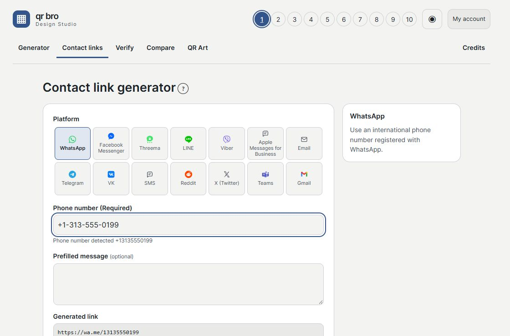

推荐操作步骤
推荐操作步骤
用户指南
推荐操作步骤
打开“联系人”链接以创建链接，或复制您希望 QR 码包含的文本。

打开生成器并将链接或文本粘贴到 QR 内容字段中。

尝试不同的边距、颜色和形状，直到您喜欢预览中的代码为止。

单击预览下方的“下载 PNG”大按钮，将 QR 码保存为图像。

还有很多选项我没有截图或上传，但你明白了。
没有人付钱给我，而我的狗已经等了一个小时才出去散步。
有一天我会抽出时间来处理剩下的事情。
发电机
在 QR BRO 中打开 ↗输入 URL 或文本。预览会在您编辑时更新。下载单个图像的 PNG 或单独的 QR 图层的 ZIP。

二维码内容
粘贴您希望扫描仪读取的完整文本。
编码
选择纠错和掩模图案。更高的校正可以为恢复损坏的数据留下更多的空间，但可以增加密度。
边距
在模块中设置安静边界。四个清晰的模块可帮助扫描仪定位代码。噪音、安全空间和图层控制改变了周围的设计。
像素和标记
选择模块形状并单独设置角标记的样式。扫描形状变化后的结果。
颜色
选择浅色和深色或反转它们。保持足够的对比度以便扫描。
高级选项
扩展该组以控制 QR 密度、尺寸和视角。
版本和像素大小
限制QR版本范围并调整像素大小。如果内容超出版本限制，请缩短或提高最大值。
转换
调整每个轴上的视角。应用扭曲后验证导出的图像。
规模和方面
设置预览缩放、画布大小、比例和透明度。使用 JSON 控件导出或重新加载可编辑设置。
联系方式链接
在 QR BRO 中打开 ↗首先选择一个平台。输入请求的收件人，例如国际电话号码、用户名或电子邮件。在支持的情况下添加消息。对于群组电子邮件字段，请使用逗号或空格分隔收件人。复制生成的链接或选择“创建 QR”以在生成器中打开它。

验证
在 QR BRO 中打开 ↗上传、删除或粘贴 QR 图像。读取解码内容和扫描状态。检查对比度、安静区和密度，然后复制结果或将其发送到发生器。

图像差异
检查原始图像和处理后图像之间哪些像素发生了变化。
图像调整
尝试调整大小、灰度、对比度、亮度或模糊。锁定设置以在随机尝试期间保留它。将新扫描件与原始件进行比较。
比较
在 QR BRO 中打开 ↗上传目标图像和源 QR 或使用当前生成器输出作为源。第三个预览映射了模块之间的差异。您可以放大任一输入并复制其解码文本。

目标处理
在比较之前调整灰度、对比度、亮度、模糊和像素化。
网格对齐
使用目标或源作为共享网格参考。当图像具有不同边距时，选择独立对齐。手动控件调整网格大小和边距。
网格外观
启用网格，选择出现的图像并调整线条颜色和不透明度。
叠加设置
启用叠加并调整混合和不透明度以比较重叠细节。
差异设置
选择匹配、差异类型或强度的颜色模式。选择模块进行仔细检查。重新排序选择或更改其识别颜色。
对比统计
读取不匹配计数和平均亮度以评估所选的比较。
校正设置
调整校正、预览校正、突出显示差异并下载校正图像或蒙版。
我的帐户和保存位置
在 QR BRO 中打开 ↗使用编号按钮在十个本地项目之间切换。登录以跨设备同步。使用电子邮件和密码创建帐户，并通过电子邮件链接或代码确认。 Google 和 GitHub 也可用。在您的帐户中，您可以编辑您的个人资料、管理登录方法和两步身份验证、检查同步冲突、备份设置或注销。

外貌和语言
在 QR BRO 中打开 ↗打开保存槽旁边的外观按钮。选择语言、主题以及浅色或深色模式。该设备会记住您的语言选择。

制作人员
在 QR BRO 中打开 ↗创建者链接、库和致谢的开放学分。使用条款链接在网站页脚中。